Dvyne Soulz, Incorporated is a non-profit organization whose base of operations is in Lincoln, Nebraska. Founded by Deon Jackson, Dvyne Soulz mission is to improve the condition of the community through cognitive programs. Having already been in operation, Deon approached me and explained that he needed a website for his organization to actually comply with requirements for certain funding. After the initial consultation with Mr. Jackson, I determined that what he needed was a website that would be strictly informational and contain mostly static content.
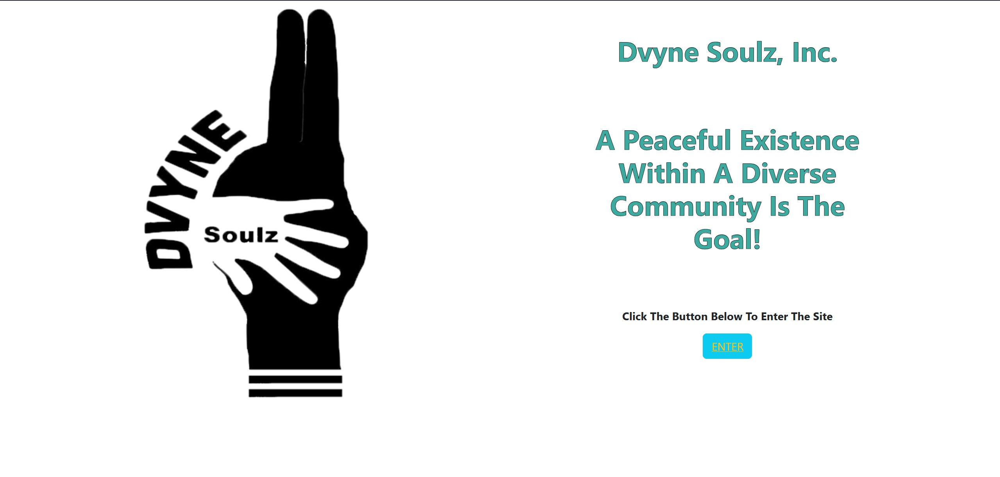
The first screen shot is the landing page for the Dvyne Soulz website. From here, the user presses the enter button to enter the site.
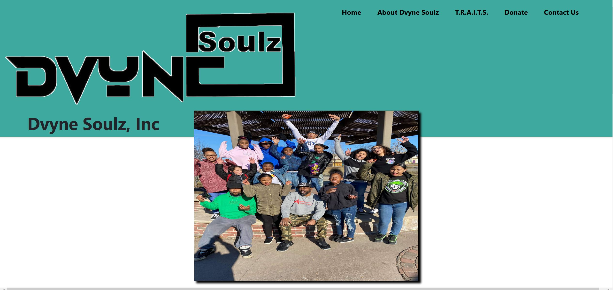
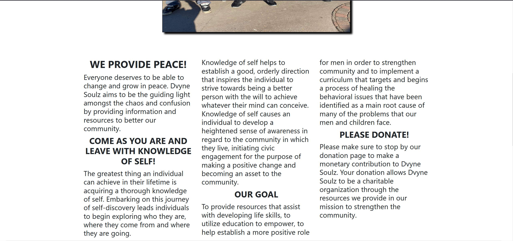
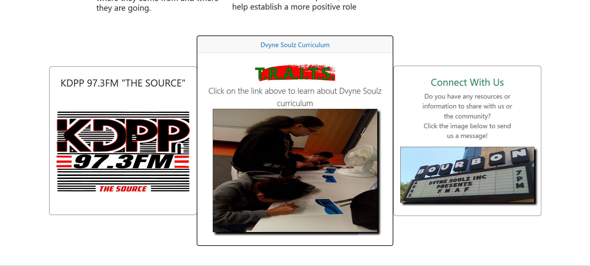
The above screen shots are of the the home page, displaying the organization name and the navigation menu offset to the top right side of the page, along with an image of the founder surrounded by participants of the program. The screen shot to the right shows the middle of the home page which displays the introduction and goal of Dvyne Soulz in an article structure. The lower, middle screen shot is the bottom of the home page, which displays panels with embedded links.
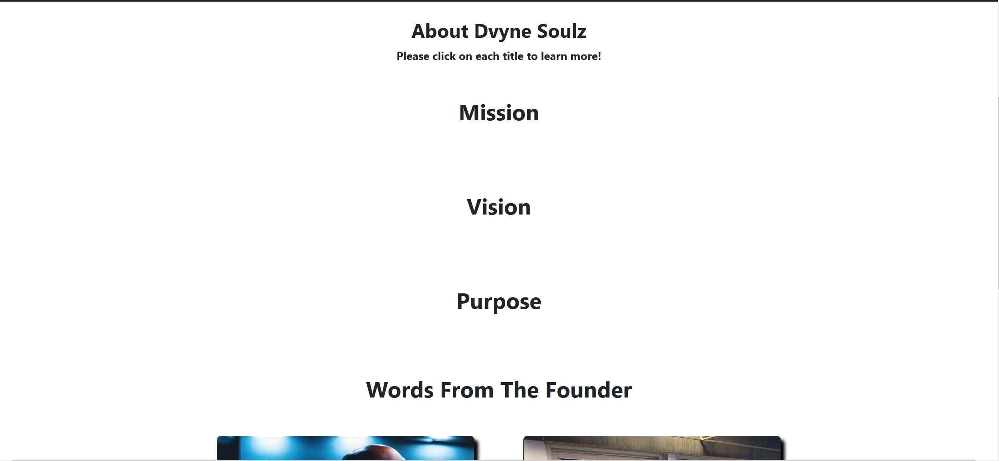
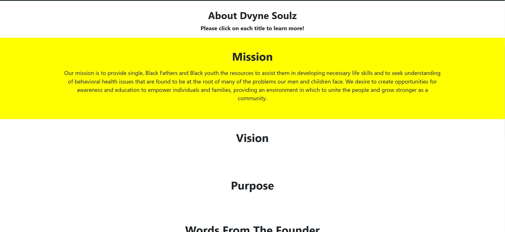
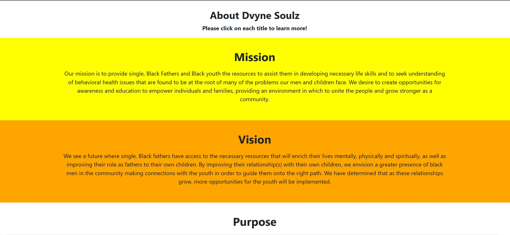
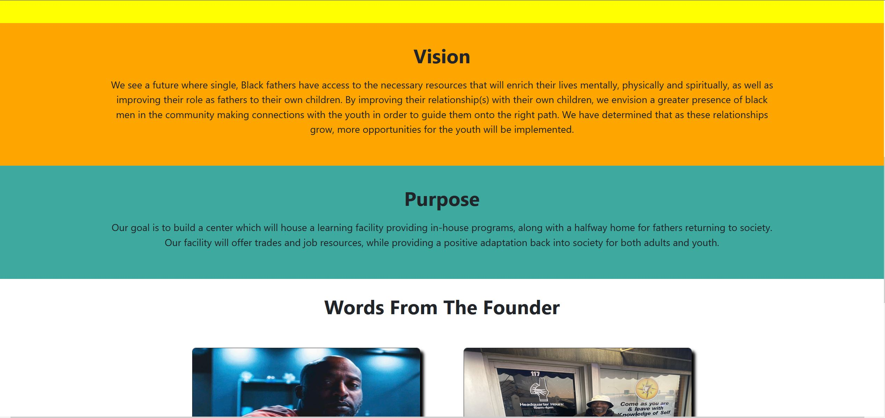
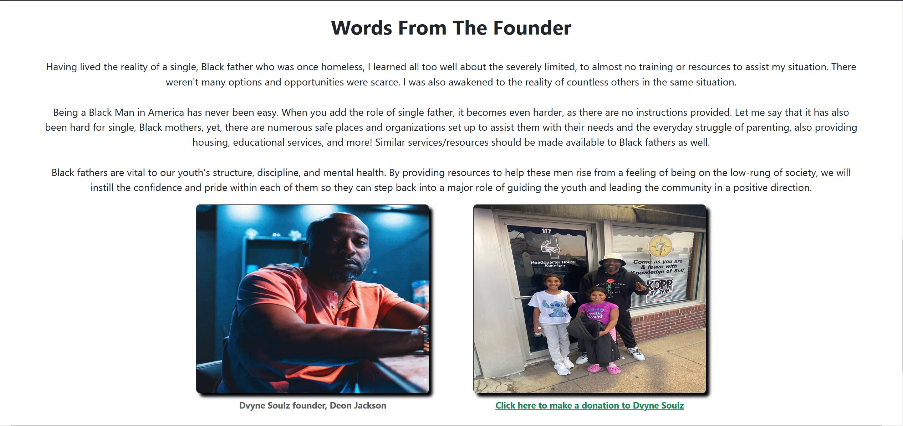
The above screen shots are of the about page which explains the mission, vision and purpose of the Dvyne Soulz organization. The user is prompted to click on each section title to reveal the text explanation, which appears with a different background color that holds the user's attention. At the bottom of the about page is a section titled "Words From The Founder." When this title is clicked on, a paragraph of words written by Deon Jackson appears above the images of himself and the second image of himself with two of his children.
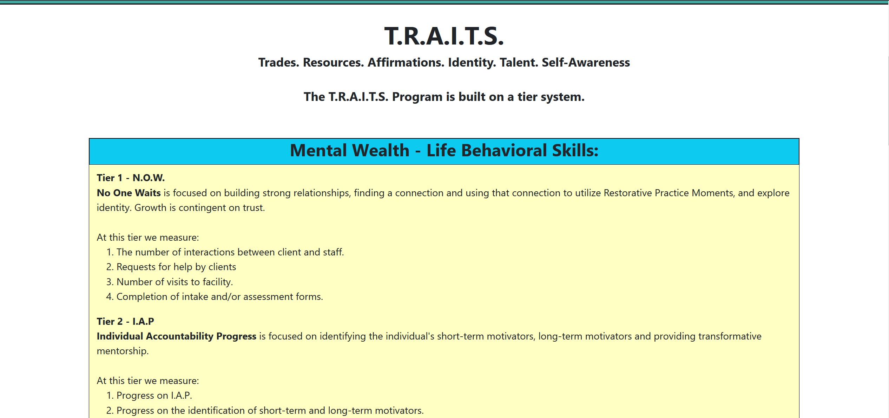
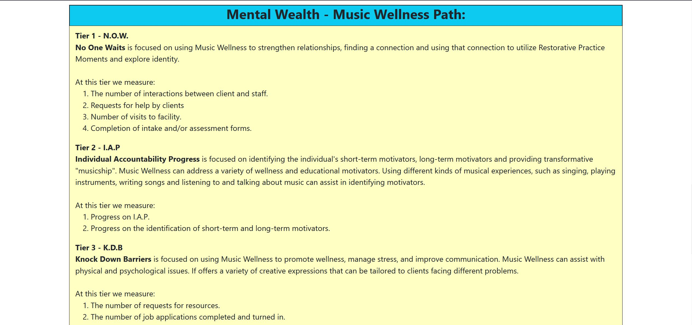
These next screen shots are of the T.R.A.I.T.S page, which is an acronym for "Trades, Resources, Affirmations, Identity, Talent, Self-Awareness," which is one of the core curriculums of Dvyne Soulz. This page gives an overview of the two aspects of this program.
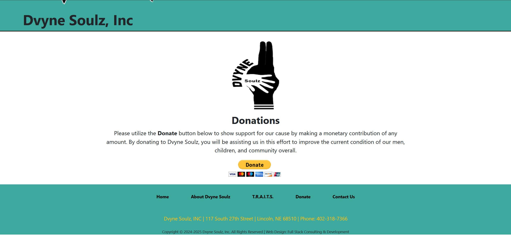
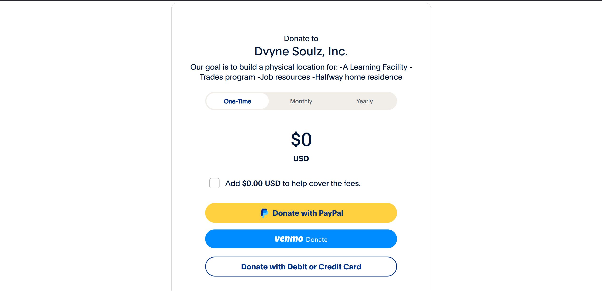
The screen shot to the left is the initial donation page. Here the user is given direction to utilize the donate button located directly above the footer of the page. Directly under the button is a visual display of accepted forms of payment. The button is provided by the Paypal service, produced with code embedded into the HTML, provided by Paypal. The screen shot to the right is the Paypal site page for Dvyne Soulz that a user will be directed to when they click on the donate button. This is where the actual donation is made.
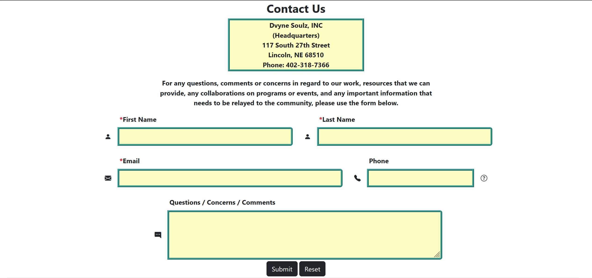
This last screen shot is of the contact us page. At the top is a text area that gives the physical location of the organization and its phone number. This is followed by the contact form that a user can fill out with a text area for questions, concerns or comments.